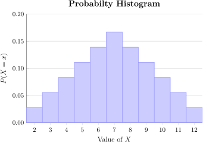

There are times when we are interested not in the sample space of an experiment, but rather in values we assign to the sample space. Consider the following examples.
You toss a fair coin three times and count the number of heads. List both the outcomes for the experiment and the possible values that result from the experiment.
Note that the values which we are interested in are the numbers 0 (no heads), 1 (one head), 2 (two heads) or 3 (three heads). Each value is associated with a certain subset of the sample space. For example, the value 2 is generated by the event \(\lbrace HHT, HTH, THH \rbrace\text{.}\) Not all of our examples are this straightforward. Consider the following.
You select a random US Citizen and measure their height in feet and inches. List both the outcomes for the experiment and describe the possible values that result from the experiment.
The outcomes in the experiment are all of the citizens of the US that could be chosen.
The values are all of the possible heights of US citizens.
In this example, we don't know what outcomes make up the event giving a height of 6.0 ft. However, we are fairly certain that there are many different outcomes (i.e. people) who have a height of 6.0 feet.
In this section, we will learn how to assign values to events in a sample space in a systemmatic way. The values will be said to be the values of a random variable. As we shall see, random variables, just like “ordinary” variables, come in two different varieties: discrete and continuous. We will focus for the first few sections of this chapter on discrete random variables and how to study their entire range of values and probabilities, called their probability distribution.
Objectives
After finishing this section you should be able to
describe the following terms:
expected value
probability distribution
probability histogram
random variable
standard deviation of a discrete random variable
variance of a discrete random variable
accomplish the following tasks:
Recognize and assign values to random variables
Create a probability distribution for discrete random variables
Construct and work with probability histograms
Find the expected value of a discrete random variable.
Find the standard deviation of a discrete random variable.
In Chapter 1 we studied data collection and the variables that resulted. In Chapter 2, we looked at probability. We can now combine those two topics—the study of variables and probability—into a single topic, the study of variables that result from random processes. Such variables are, not surprisingly, called random variables.
Definition3.1.3.
A random variable is a variable that takes on values corresponding to the outcome of some random process.
Think back to Section 2.1 on randomness and simulation. In that section we introduced the notion of a random process and a deterministic process. A simple way to tell if a variable is random or “ordinary” is to consider the source of its values. If the values come from a deterministic process—that is, they will be the same each time the measurement is taken, then the variable is not random. If the underlying process is a random process, then so is the variable. Consider the following example.
In each case, we ask ourselves if the value we measure is a result of a random or deterministic process.
Since your grandmother can be assumed to have the same height each time you measure her (within a set time-frame of course), this is a deterministic process. Thus, her height is not a random variable.
When you randomly choose a grandmother to measure, you will get different grandmothers resulting in different heights. The underlying process is random and therefore, this is a random variable.
Flipping a coin is by nature a random event. The number of heads could be anything from 0-10 in this process. Therefore, this variable is a random variable.
Since the coin has a heads on both sides, we know for certain that one head will appear. The process is deterministic, and therefore the variable is not random.
Just like “ordinary” variables, random variables can be either discrete or continuous. Recall that a discrete variable is one that takes on a finite number of values (or an infinite number with “spaces” between the values), whereas a continuous variable can take on any value in a given range. Looking back at Example 3.1.4 you should see that both discrete and continuous random variables are represented.
The height of a grandmother can take on any value within a “reasonable” range (we don't expect 10ft tall grandmothers, nor do we expect 1ft tall grandmothers). It is therefore a continuous random variable.
In this text, we will follow standard notation and refer to random variables using capital letters from the end of the alphabet, such as \(X\text{,}\) or \(Y\text{.}\) The notation \(X=x\) stands for the set of outcomes in an experiment which give the random variable \(X\) the value \(x\text{.}\) Consider the following revisitation of Example 3.1.1.
Remembering that “\(X=x\)” stands for a set of outcomes, we find that:
“\(X=1\)” is the set \(\lbrace HTT, THT, TTH \rbrace\) — in other words, the set of outcomes with \(X=1\) head in the 3 flips.
“\(X=3\)” is the set \(\lbrace HHH \rbrace\) — this is the only outcome in which \(X\) (the number of heads) is 3.
\(P(X=2)\) is the probability of the event \(\lbrace HHT, HTH, THH \rbrace\text{.}\) Since the coin is fair and each flip is independent of the previous flip, each of these outcomes has probability \(\frac{1}{2}\times \frac{1}{2} \times \frac{1}{2} = \frac{1}{8}\text{.}\) Therefore,
The number of students in a randomly selected college course at your favorite university
The amount of money that a randomly selected lottery ticket is worth in a certain scratch-ticket lottery game
The length of a randomly selected piece of music from your collection
The number of cats that you own
The length of your favorite piece of music in your collection
The weight of a randomly selected nickel currently in circulation.
Question: identify each of the variables above as a Discrete Random Variable, Continuous Random Variable, Discrete Deterministic Variable, or Continuous Deterministic Variable.
A game is played by drawing two marbles, without replacement, from an urn containing 10 black marbles and 2 white marbles, and 1 green marble. For every black marble you draw, you win nothing. For every white marble you draw, you win $5. Finally, drawing the green marble earns you $20. A random variable \(X\) is defined to be the amount of money that you win from your two draws.
Question: what are all of the possible values of \(X\text{?}\)
Two standard dice are rolled and a random variable \(Y\) is defined to be the difference between the largest value shown and smallest value shown. So, for example,
if you roll a 5 and a 2, then \(Y = 5 - 2 = 3\text{,}\)
if you roll a 3 and a 6, then \(Y = 6 - 3 = 3\text{,}\) and
if you roll a 2 and a 2, then \(Y = 2 - 2 = 0\text{.}\)
Question: how many distinct values of \(Y\) are possible?
Again, refering back to Chapter 1, we looked at the distribution of a set of data values by creating frequency tables for qualitative variables, and frequency distributions for quantitative variables. Once we have defined a random variable for a random process, we can also create a probability distribution for that variable. The difference is that instead of listing a frequency for each value of the variable, we list the probability of that value. Formally, we state this as follows.
Definition3.1.12.
The probability distribution for a discrete random variable is a formula, table, or graph that assigns to each possible value of \(X\) the probability that that value will occur.
As long as our random variable has a relatively small number of possible values, we use a table to organize our probability distribution, as seen in the next example.
An urn contains seven colored marbles: 4 red, 2 white, and 1 blue. Two marbles are drawn without replacement, and the colors are noted. A random variable \(X\) is defined to be the number of white marbles drawn. Construct the probability distribution for \(X\text{.}\)
The first step in constructing our probability distribution is to list the possible values of \(X\text{.}\) Since we only draw two marbles, the possible number of white marbles drawn is 0, 1, or 2.
The next step is to figure out the probability that \(X\) takes on each of those values.
Note that in the preceding example, the sum of the probabilities is one. This should always be the case since the values of \(X\) cover all possible outcomes of the experiment. No matter how we present a probability distribution, it must always be the case that \(\sum_x P (X=x) = 1\text{,}\) or in other words, if we add together the probability that \(X=x\) for all values of \(x\text{,}\) we get one.
A researcher wishes to find a dog owner in a town in which one-third of individuals own a pet dog. A random variable \(Y\) is defined to be the number of people the researcher must ask before finding one who owns a dog. Give a probability distribution for \(Y\text{.}\)
Our first thought might be to construct a table for this probability distribution similar to what we did in the last example. The problem we run into is that there are an infinite number of possible values (or at least, very large considering we don't know how big the town is). So instead, we will construct a formula.
\(Y=y\) means that it took \(y\) attempts to find the first dog owner. So the first \(y-1\) people that we asked were not dog owners. The probability that a given person is not a dog owner is \(\frac{2}{3}\text{.}\) The last person we ask does have a dog, and that probability is \(\frac{1}{3}\text{.}\) This yields the formula:
We could construct a partial table for the example above. The first few rows of this table are shown below.
\(y\)
\(P(Y=y)\)
\(1\)
\(\frac{1}{3}\)
\(2\)
\(\frac{2}{9}\)
\(3\)
\(\frac{4}{27}\)
\(\vdots\)
\(\vdots\)
Table3.1.16.Partial Probability Distribution Table
In this table, the sum of the probabilities is not one because in this table we have not listed all of the possible values of \(Y\text{.}\) That is the reason that we prefer using a formula for this particular probability distribution.
Figure3.1.17.Probability Distributions IFigure3.1.18.Probability Distributions II
A game starts by rolling a standard die. If an even number is rolled, you get nothing. If an odd number is rolled, you then flip a coin. If the coin comes up heads, you win the amount shown on the die. If the coin comes up tails, you win nothing. A random variable \(W\) is defined to be the amount of money that you win.
Question: find the probability distribution for \(W\)
After constructing frequency distributions, the first thing we did was graph those results using a histogram. We can also construct histograms for probability distributions. These histograms are an important step in understanding not only the shape of the distribution, but also an important application of the area principle that we saw in Section 1.2.
Definition3.1.28.
A probability histogram is a histogram in which each value of the random variable is represented by a bar having a height equal to the probability of that value.
Let's revisit the two examples we saw on the last page. We can construct a probability histogram from the table in Example 3.1.13 as follows.
Recall that in Example 3.1.13 we drew two marbles from an urn containing 4 red, 2 white, and 1 blue marbles. A random variable \(X\) was defined to be the number of white marbles drawn. Use the probability distribution given in the solution to construct a probability histogram.
Based on the distribution we found, which is repeated below, we construct the histogram shown.
\(x\)
\(P(X=x)\)
\(0\)
\(\frac{10}{21} \approx 0.4762\)
\(1\)
\(\frac{10}{21} \approx 0.4762\)
\(2\)
\(\frac{1}{21} \approx 0.0476\)
Table3.1.30.
Figure3.1.31.Probability Histogram
The area principle plays an important role in this histogram. Recall that the area principle states that the area of a bar in a histogram must accurately reflect the proportion of the class represented by that bar in the frequency distribution. In a probability histogram, this relationship is even stronger. The area of each bar must be equal to the probability of the value of \(X\) that it represents. Since each bar has a height equal to the probability and a width equal to one, this is indeed the case.
In the second example from the last page, we did not have a table, but rather a formula for finding the probability of a given value of the random variable \(Y\text{.}\) We can use this formula to construct a partial probability histogram for this random variable, and we do so below.
Recall that in Example 3.1.15 the probability that a researcher would have to ask \(y\) individuals before finding one who owned a dog was given by the formula:
Limiting ourselves to just the first ten values of the variable, we construct the histogram shown to the right. A few things to note about this histogram:
It still obeys the area principle. That is, each bar has area equal to the probability of that random variable value.
If we were to add together all the bars (an infinite number), the sum would be 1 because the probability of the sample space is 1.
In this instance, the bars become so short that they can not be seen after about \(Y=10\text{.}\)
Figure3.1.33.Probability Histogram for \(Y\)
We will see more graphs for probability distributions in later sections. For now, the most important thing to remember is that the area in a bar in such a histogram is equal to the probability of the value of the random variable represented by that bar.
Figure3.1.34.Probability Histograms IFigure3.1.35.Probability Histograms II
Probability distributions are useful for more than just summarizing information about a random variable. They can also be used to compute useful information about the overall experiment. Before we introduce these computations, however, let's look at an example of information about an entire distribution that might be useful.
A charity sells raffle tickets for $1.00 each. Each raffle ticket allows you to draw one colored ball from an urn containing 100 balls, 95 of which are red, 4 of which are white, and one of which is gold. If you draw a red ball, you get nothing. If you draw a white ball, you win $5. Finally, if you draw the gold ball, you win $50. Construct a probability distribution for \(X\text{,}\) the amount of money you win in this game. Then determine if the charity will make money on this game.
To construct a probability distribution, we first list the possible values of \(X\text{.}\)
If we draw a red ball, we win nothing \(X = 0.\)
If we draw a white ball, we win $5 so \(X = 5\text{.}\)
Finally, if we are lucky enough to draw the gold ball, we win $50, so \(X=50\text{.}\)
This yields the following probability distribution.
\(x\)
\(P(X=x)\)
\(0\)
\(\frac{95}{100}\)
\(5\)
\(\frac{4}{100}\)
\(50\)
\(\frac{1}{100}\)
Table3.1.43.Probability Distribution for \(X\)
In order to determine if the charity will make money, we need to factor in both the payouts as well as the probability. We will do this by computing the average value of one of the 100 balls in the urn. We know that there is one ball worth $50 and there are four worth $5. All of the others are worth $0. So, the average is:
So if we were to play this game over and over again, our average winnings would be $0.70. But we paid a dollar to play. So our average payout would be \(0.70-1 = -0.30\text{.}\) So we end up loosing thirty cents every time we play. So the charity does in fact make money on the game.
The average value mentioned above can be called the mean of the probability distribution, or the expected value of the random variable. It may seem that our computation above had nothing to do with the probability distribution we found, but closer examination shows that they are very closely linked. If we regroup our average computation, we get:
where \(x\) is summed over all values of the random variable.
As shown above, the expected value of \(X\) is really a weighted average. Each value of the random variable is weighted (i.e. multiplied) by its probability. So values that are very unlikely count far less than values that are likely. Let's see how this interaction plays out by finding the expected value of a slight variation on the game from Example 3.1.42.
A charity sells raffle tickets for $2.00 each. Each raffle ticket allows you to draw two colored balls from an urn containing 100 balls, 95 of which are red, 4 of which are white, and one of which is gold. For every white ball you draw, you win $5. If you draw the gold ball, you win $50. If \(Y\) is the amount of money you make on the game (after paying your $2.00), find the probability distribution for \(Y\) and use it to compute the expected value of \(Y\text{.}\)
Your first step is to construct a probability distribution by listing all of the values of \(Y\) and determining their probabilities.
If we draw two red balls, then \(Y = 0 + 0 - 2 = -2\text{.}\)
If we draw one red and one white, then \(Y = 0 + 5 - 2 = 3\text{.}\)
If we draw two white, then \(Y = 5 + 5 - 2 = 8\text{.}\)
If we draw a red and a gold, then \(Y = 0 + 50 - 2 = 48\text{.}\)
And finally, a white and a gold gives \(Y = 5 + 50 - 2 = 53\text{.}\)
We can then use combinations to compute the probability of each of these values. For example, the probability of winning $3 by drawing a red and a white ball is
because we draw 1 of the 95 red balls and 1 of the 4 white balls in an experiment which involves drawing 2 out of 100 possible balls. The entire probability distirbution is shown below.
Table3.1.46.Probability Distribution for \(Y\text{.}\)
Now to compute the expected value, we must multiply each value of \(Y\) by its probability and then add those together. One easy way to keep track of this is to add a third column to our probability distribution table, into which we place these products. The sum of that third column will be our expected value.
\(y\)
\(P(Y=y)\)
\(y \times P(Y=y)\)
\(-2\)
\(0.9020\)
\(-2(0.9020) = -1.8040\)
\(3\)
\(0.0768\)
\(3(0.0768) = 0.2303\)
\(8\)
\(0.0012\)
\(8(0.0012) = 0.0097\)
\(48\)
\(0.0192\)
\(48(0.0192) = 0.9212\)
\(53\)
\(0.0008\)
\(53(0.0008) = 0.0428\)
\(E(X) = \)
-$0.60
Table3.1.47.Probability Distribution for \(Y\text{.}\)
Since the expected value of \(Y\) is negative, the average outcome will result in the player losing money on the game. That menas that, in the long run, the charity will still make money.
Before we move on to the next computation, let's observe a few important things about the expected value.
Observation3.1.48.
First, the expected values does not need to be one of the possible values of \(Y\text{.}\) In the example above, there is no outcome in this random process that leads to us losing sixty cents. However, the expected value of -$0.60 tells us that on average, we will lose sixty cents on each game we play. This is similar to saying that the average American family has 2.2 children. No family actually has 2.2 children, but if you average it out, this is the number you come up with.
Next, note that the expected value is not a guarantee. The charity could sell 100 tickets, making $200, and then have four lucky people pull a red and gold ball and win $50 each. This wipes out their profits all together. That is not a likely scenario, but it could happen. All the expected value tells us is that the most likely outcome is that they make $0.60 per ticket (because we lost that much), so wind up with $60.00 in profit on 100 tickets sold.
Finally, notice how the probability and the value of \(Y\) both play an important role in computing its expected value. If a value of \(Y\) is very large, but has a very low probability, it will contribute little to the expected value. A smaller value with a large probability may contribute a lot more. Both the value and its probability need to be considered when computing expected value.
Figure3.1.49.Expected Value IFigure3.1.50.Expected Value II
A game consists of rolling a single fair die and noting the number that comes up. If the number is even, you must pay $2.00. If the number is a 1 or a 3, you win $1.00. Finally, if the number is a 5 you win $5.00. Let the random variable \(X\) represent the net value of the game (it could be negative if you lose).
Question: what is the expected value of \(X\text{?}\) Round your answer to two decimal places.
A coin jar contains 6 quarters, 8 dimes, and 10 pennies. You reach into the jar and pull out two coins without replacement. Let the random variable \(Y\) be the amount of money you get.
Question: what is the expected value of \(Y\text{?}\) Round your answer to two decimal places.
As was the case with the mean of an ordinary variable, the expected value of a random variable gives us only part of the picture. In addition to knowing what the typical value of the variable will be, we often want to know how spread out the values of the variable are. That is, we want to know the standard deviation of the random variable. To get to the standard deviation, we must first compute the variance.
Definition3.1.55.
The variance of a discrete random variable \(X\) is:
where \(\mu = E(X)\) is the mean, or expected value, of the random variable.
Note that in this formula we are adding together the squares of the differences between each value of \(X\) and the mean of \(X\text{.}\) This definition is similar then to the definition of the variance of a sample or population as seen in Subsection 1.3.4. One big difference is that instead of dividing by \(n\) or \(n-1\text{,}\) we multiply each term by the probability that \(X\) will have that value. So in a sense, this is the weighted variance of \(X\) where each value is weighted by its probability. From the variance, it is relatively easy to compute the standard deviation.
Definition3.1.56.
The standard deviation of a discrete random variable \(X\) is \(\sigma = \sqrt{\sigma^2}\text{.}\)
To see this in action, let's consider the following example.
Our first step is to create a probability distribution for \(Y\text{,}\) which is done below. note that the probabilities are found by observing the number of outcomes that gives each sum. For example, \(X=4\) is the set \(\lbrace (1,3), (2,2), (3,1) \rbrace\text{,}\) so \(P(X=4) = \frac{3}{36}\text{.}\)
\(x\)
\(P(X=x)\)
\(2\)
\(\frac{1}{36}\)
\(3\)
\(\frac{2}{36}\)
\(4\)
\(\frac{3}{36}\)
\(5\)
\(\frac{4}{36}\)
\(6\)
\(\frac{5}{36}\)
\(7\)
\(\frac{6}{36}\)
\(8\)
\(\frac{5}{36}\)
\(9\)
\(\frac{4}{36}\)
\(10\)
\(\frac{3}{36}\)
\(11\)
\(\frac{2}{36}\)
\(12\)
\(\frac{1}{36}\)
Table3.1.58.Distribution for \(X\)
Figure3.1.59.Probability Histogram
We note that the histogram is symmetric about a single mode. In other words, it is mound shaped.
Next we need to compute the mean (expected value) and standard deviation. We can then use the empirical rule on this mound shaped distribution to determine the range of 95% of the values of \(X\text{.}\)
\(x\)
\(P(X=x)\)
\(x\times P(X=x)\)
\((x-\mu)^2\times P(X=x)\)
\(2\)
\(\frac{1}{36} \approx 0.0278\)
\(2(0.0278) = 0.0556\)
\((2-7)^2(0.0278) = 0.6950\)
\(3\)
\(\frac{2}{36} \approx 0.0556\)
\(3(0.0556) = 0.1668\)
\((3-7)^2(0.0556) = 0.8896\)
\(4\)
\(\frac{3}{36} \approx 0.0833\)
\(4(0.0833) = 0.3332\)
\((4-7)^2(0.0833) = 0.7497\)
\(5\)
\(\frac{4}{36} \approx 0.1111\)
\(5(0.1111) = 0.5555\)
\((5-7)^2(0.1111) = 0.4444\)
\(6\)
\(\frac{5}{36} \approx 0.1389\)
\(6(0.1389) = 0.8334\)
\((6-7)^2(0.1389) = 0.1389\)
\(7\)
\(\frac{6}{36} \approx 0.1667\)
\(7(0.1667) = 1.1669\)
\((7-7)^2(0.1667) = 0.0000\)
\(8\)
\(\frac{5}{36} \approx 0.1389\)
\(8(0.1389) = 1.1112\)
\((8-7)^2(0.1389) = 0.1389\)
\(9\)
\(\frac{4}{36} \approx 0.1111\)
\(9(0.1111) = 0.9999\)
\((9-7)^2(0.1111) = 0.4444\)
\(10\)
\(\frac{3}{36} \approx 0.0833\)
\(10(0.0833) = 0.8330\)
\((10-7)^2(0.0833) = 0.7497\)
\(11\)
\(\frac{2}{36} \approx 0.0556\)
\(11(0.0556) = 0.6116\)
\((11-7)^2(0.0556) = 0.8896\)
\(12\)
\(\frac{1}{36} \approx 0.0278\)
\(12(0.0278) = 0.3336\)
\((12-7)^2(0.0278) = 0.6950\)
\(\mu = E(X) = 7\)
\(\sigma^2 = 5.8352\)
Table3.1.60.Exepcted Value and Variance of \(X\)
So the mean is \(\mu = 7\) and the standard deviation is \(\sigma = \sqrt{5.8352} \approx 2.4156\text{.}\) According to the empirical rule, 95% of the data should like within two standard deviations of the mean in a mound shaped distribution. That is:
\begin{align*}
7 - 2(2.4156) \amp\lt \text{ 95% of data } \lt 7 + 2(2.4156)\\
2.1688 \amp\lt \text{ 95% of data } \lt 11.83
\end{align*}
Since the variable is discrete, we round to get the range of 3 to 11. We expect to get between 3 and 11 about 95% of the time.
Figure3.1.61.Standard Deviation IFigure3.1.62.Standard Deviation II
A game consists of rolling a single fair die and noting the number that comes up. If the number is even, you must pay $2.00. If the number is a 1 or a 3, you win $1.00. Finally, if the number is a 5 you win $5.00. Let the random variable \(Y\) represent the net value of the game (it could be negative if you loose).
Question: what is the standard deviation of \(Y\text{?}\) Round your answer to two decimal places.
Suppose that you are given a probability distribution for a random variable \(X\) and asked to compute the standard deviation for \(X\text{.}\) Below are several steps you might perform in this computation.
Add a column for \(x\times P(X=x)\)
Add a column from \((x-\mu)^2\times P(X=x)\)
Divide by \(n-1\)
Take the square root of the variance
Question: which of the following is not a step in computing the standard deviation of \(X\text{?}\)